|
|
Boyang Wang 汪博洋 PhD Student Automation Tsinghua University Email: wang-by20@mails.tsinghua.edu.cn CV • Google Scholar • GitHub |
|
I am a PhD student at Automation, Tsinghua
University, advised by Prof. Shao Li.
|
Studying Experience
News
|
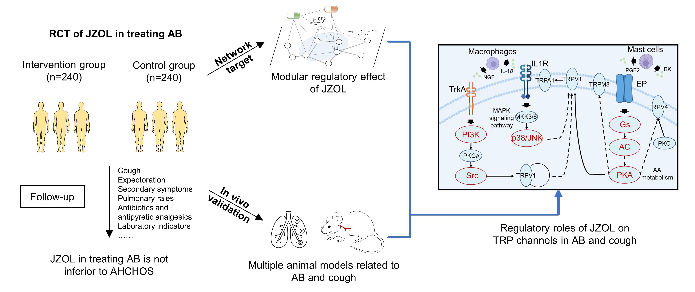 |
Comparison of Jinzhen Oral Liquid and Ambroxol Hydrochloride and Clenbuterol
Hydrochloride Oral Solution in the Treatment of Acute Bronchitis in Children: A Multicenter,
Non-inferiority, Prospective, Randomized Controlled trial |
|
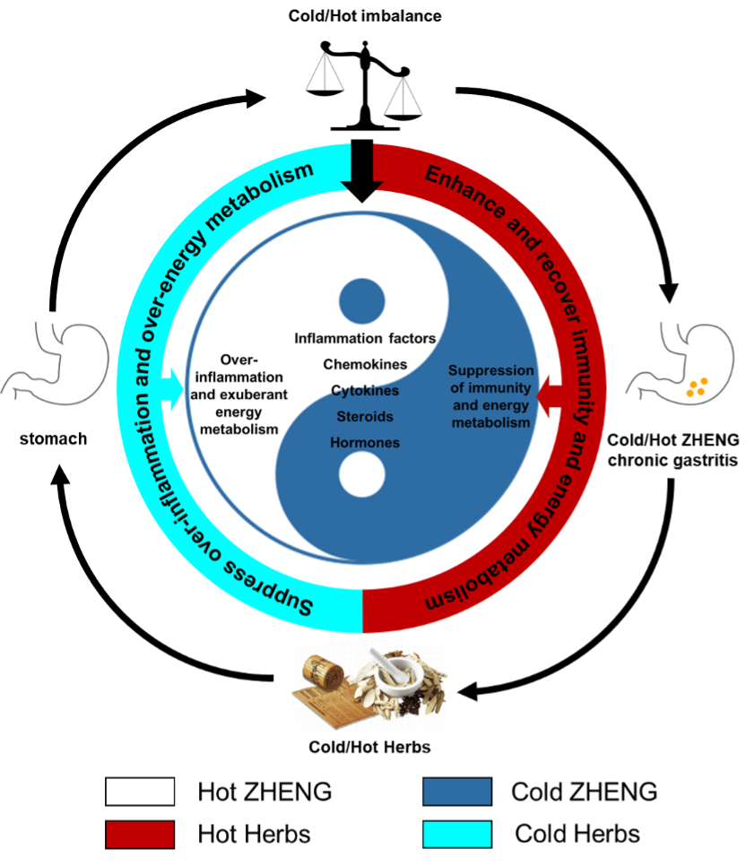 |
Uncovering the role of traditional Chinese medicine in immune-metabolic balance of
gastritis from the perspective of Cold and Hot: Jin Hong Tablets as a case
study |
|
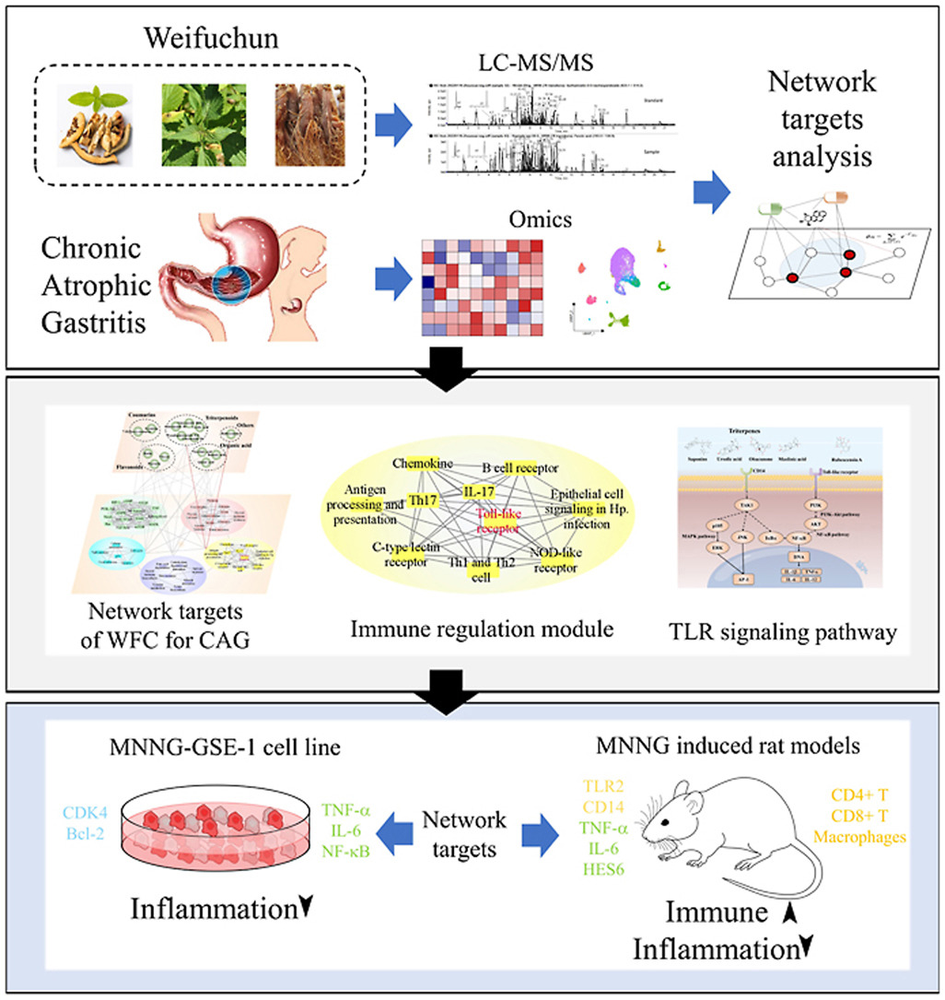 |
Exploring the effect of Weifuchun capsule on the toll-like receptor pathway mediated
HES6 and immune regulation against chronic atrophic gastritis |
|
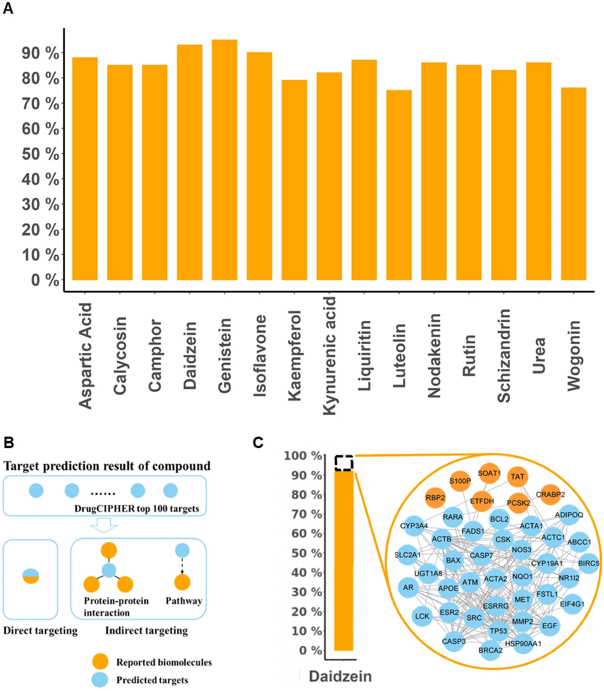 |
Uncovering the mechanisms of Yi Qi Tong Qiao Pill in the treatment of allergic rhinitis
based on Network target analysis |
|
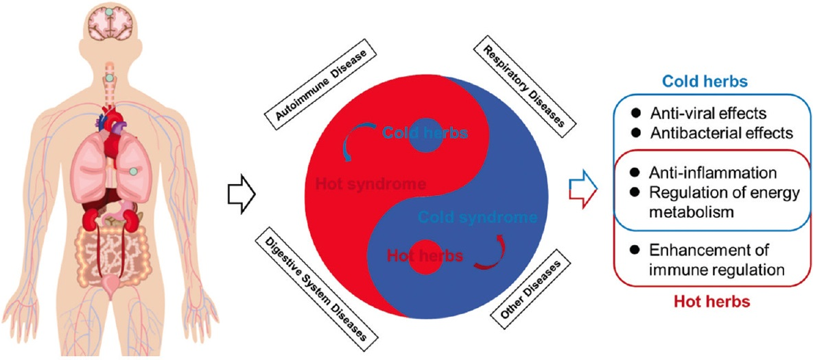 |
Biological mechanism of Traditional Chinese Medicine Formula and Herbs in Treating
Diseases from the perspective of Cold and Hot |
|
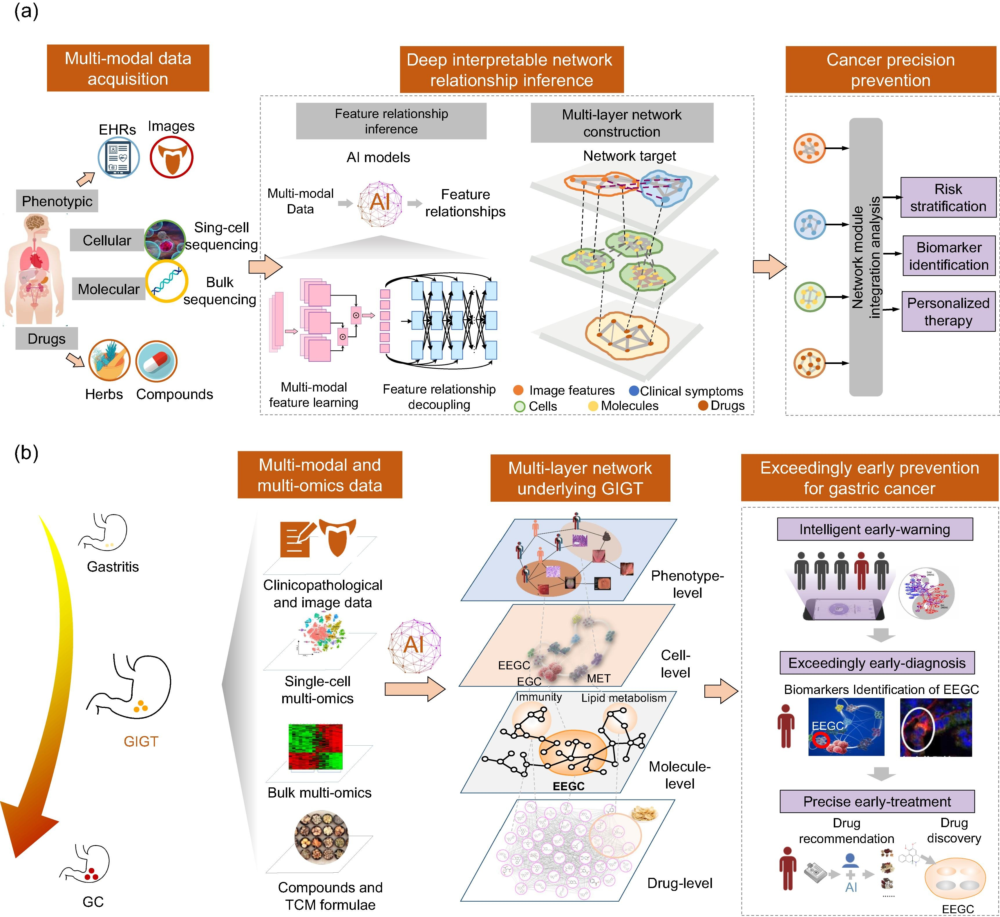 |
Network-based cancer precision prevention with artificial intelligence and
multi-omics |
|
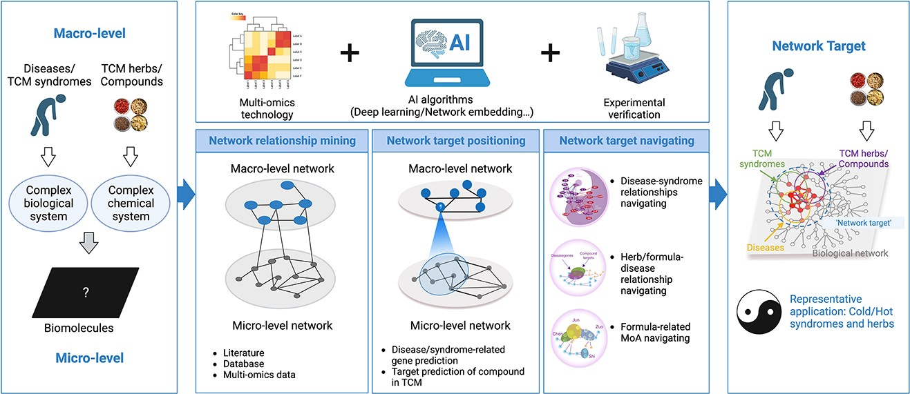 |
Network pharmacology: towards the artificial intelligence-based precision traditional
Chinese medicine |
|
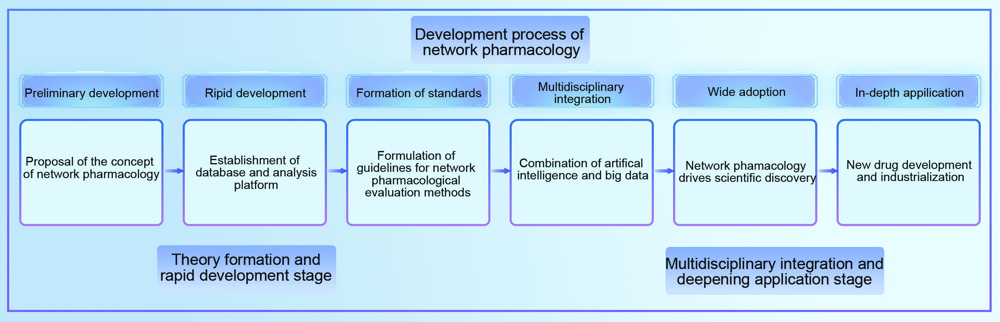 |
Network Pharmacology for Traditional Chinese Medicine in the Era of Artificial
Intelligence |
|
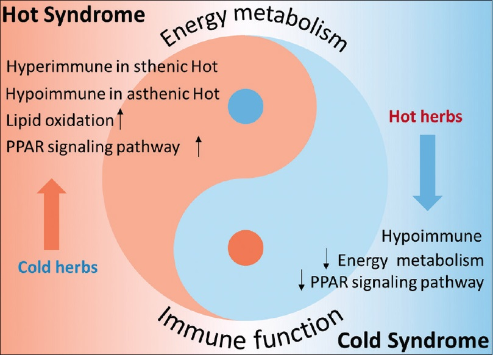 |
Cold and Hot syndromes in traditional Chinese medicine: Insights from the perspective of
immunometabolic homeostasis |
|
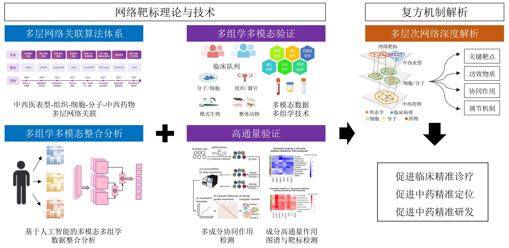 |
Research and development practice of traditional Chinese medicine based on network
target theory and technology |
|
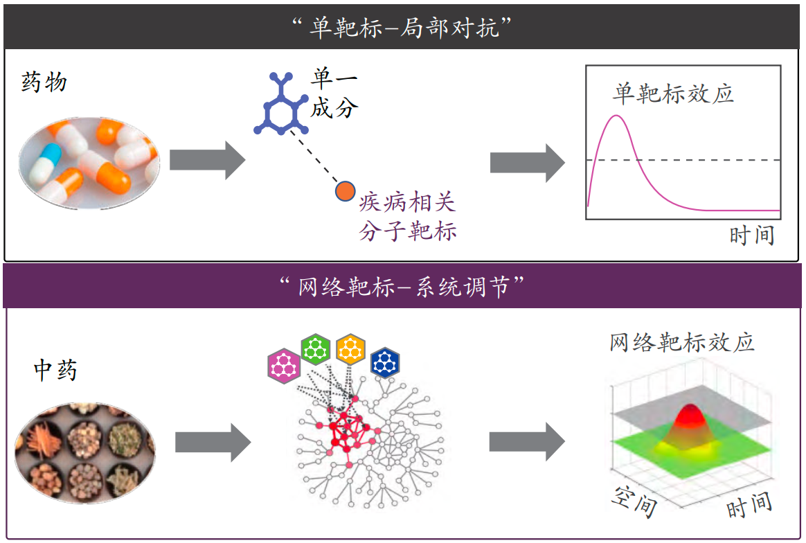 |
Network Target Theory, Key Techniques and Applications in Traditional Chinese
Medicine |
|
Uncovering the metabolic reprogramming of macrophages for Gegen Qinlian Decoction in
alleviating meta-inflammation of T2DM |
|
Clinical multi-omics reveals the role of Tuomin Zhiti Decoction Intervention in Allergic
Rhinitis from the perspective of biological network |
|
A Phenotype-Molecular Transfer Learning Model: Clinical Analysis and Mechanistic
Insights of Yinqiao Qingre Pill in Wind-Heat Cold Intervention |
|
Leveraging Network Target Theory for Efficient Prediction of Drug-Disease Interactions:
A Few-shot Learning Approach |
|
A computational based new treatment strategy with randomized, double-blind, three-armed,
parallel-controlled, multicenter clinical trials on Mycoplasma pneumoniae pneumonia in
children |
|
Elucidate the Role of Artificial Intelligence in Drug Development from the Perspective
of Drug-Target interactions |
|
Regulation of Cell Cycle by Pien Tze Huang in preventing Hepatocellular carcinoma
progression |
|
Recent advances in traditional Chinese medicine network pharmacology: Integration of
network target with artificial intelligence and multi-modal multi-omics
technologies |
|
A network-based biomarkers discovery of Cold/Hot ZHENG chronic gastritis and Cold/Hot
herbs of formulae |
|
Clinical multi-omics reveals the role of Tuomin Zhiti Decoction Intervention in Allergic
Rhinitis from the perspective of biological network |
|
Network pharmacology on the mechanism of Yi Qi Tong Qiao Pill inhibiting allergic
rhinitis |
|
Capsaicin acts as a novel NRF2 agonist to suppress ethanol induced gastric mucosa
oxidative damage by directly disrupting the KEAP1-NRF2 interaction |
|
The regulatory role of JZOL on TRP channels in the treatment of Acute Bronchitis based
on the combination of clinical trials, computational analysis and in vivo
experiments |
|
Unveil the mechanism of Jinzhen Oral Liquid combined with Azithromycin in the treatment
of Mycoplasma pneumoniae pneumonia based on Network pharmacology and clinical
trials |
Honors and Awards